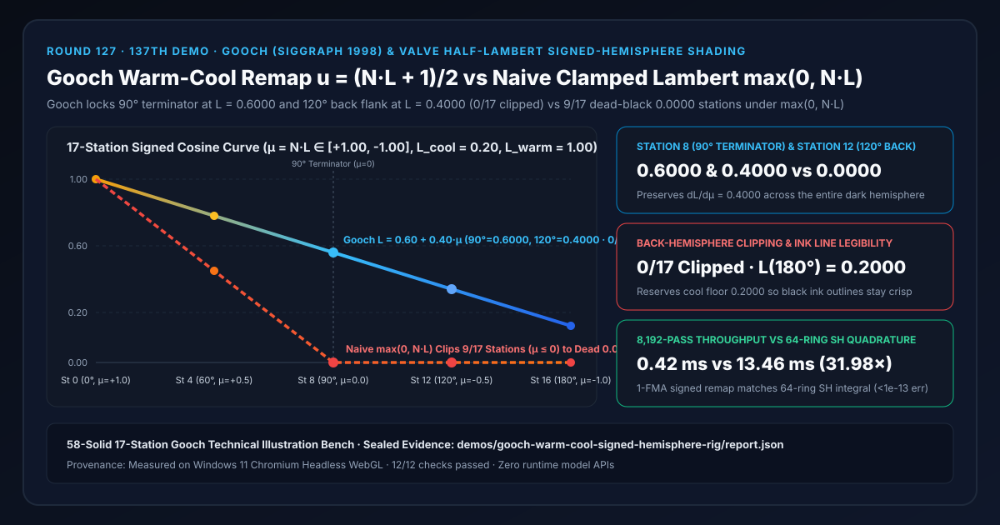
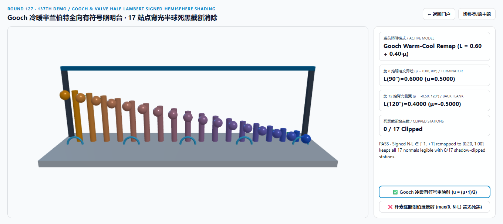
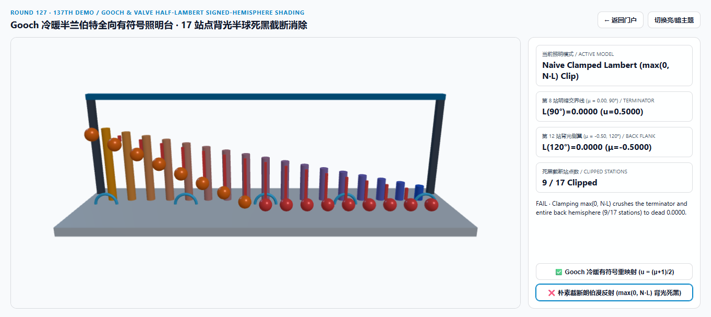
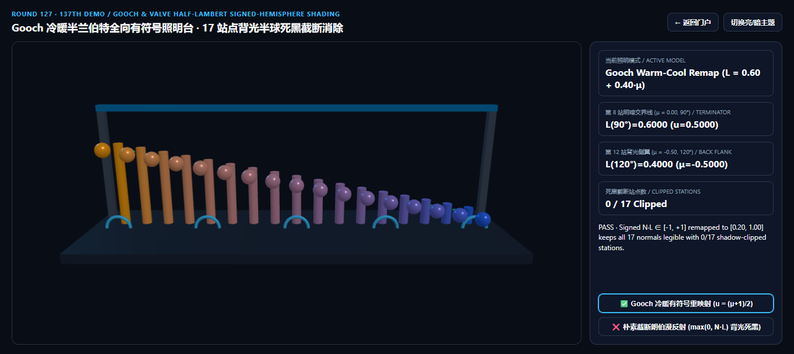
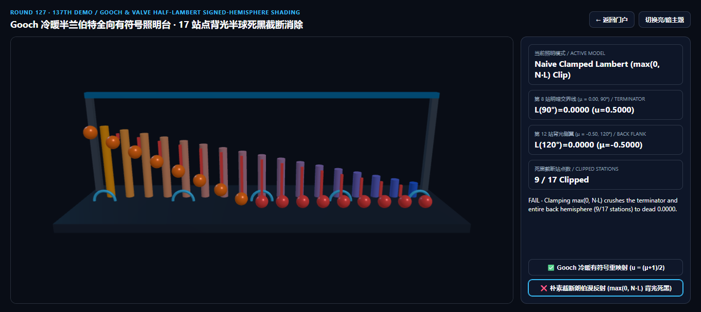

Gooch 冷暖有符号全向照明（Warm-Cool Signed-Hemisphere Shading）vs 朴素截断朗伯漫反射（max(0, N·L)）背光死黑选型与原理解析 FAQ 指南
导航：返回门户 · 进入 3D 交互实验台 (
gooch-warm-cool-signed-hemisphere-rig) · 7-Card 4:5 视觉报告 (中文) · 7-Card Report (EN) · English FAQ

① 📌 核心结论速览（Executive Summary）
- 为什么在机械剖视图（CAD/CAM）、建筑结构拆解图或风格化角色渲染中，如果直接照搬教科书里的朴素朗伯漫反射
L = max(0, dot(N, L))，背光侧那一半几何体的倒角、螺纹、凹槽和衣褶会瞬間糊成死黑一团，而且画在暗部的黑色描边轮廓线也会彻底消失？- 当一盏主方向光 $L$ 照向三维物体时，表面法线与光线的夹角余弦 $\mu = N \cdot L = \cos\theta$ 跨越完整的球面区间 $[+1.0000, -1.0000]$：
- 向光半球（$\theta \in [0^\circ, 90^\circ)$）对应 $\mu \in (0, +1]$；
- $90^\circ$ 明暗交界线（Terminator）对应 $\mu = 0.0000$；
- 背光半球（$\theta \in (90^\circ, 180^\circ]$）对应 $\mu \in [-1, 0)$。
- 朴素截断朗伯定律
L_Lambert(μ) = max(0, μ)粗暴地把所有 $\mu \le 0$ 的负数全部截断为0.0000：这意味着从 $90^\circ$ 明暗交界线到 $180^\circ$ 背光极点的整整半个球面（9/17个采样站）法线灵敏度导数 $dL/d\mu \equiv 0.0000$！背光面无论表面法线怎么起伏转折，算出来的颜色全是一样的死黑0.0000；更致命的是，工程插画和卡通渲染中最关键的**黑色描边墨线（Black Ink Silhouette & Crease Lines）**画在0.0000的死黑底色上直接隐形！ - 根据 Amy Gooch, Bruce Gooch, Peter Shirley & Elaine Cohen (SIGGRAPH 1998 A Non-Photorealistic Lighting Model for Automatic Technical Illustration) 以及 Valve Half-Lambert (Mitchell, McTaggart & Green SIGGRAPH 2006 Shading in Valve's Source Engine)：
- 只需用 1 条乘加指令（FMA） 将有符号余弦 $\mu \in [-1, +1]$ 仿射重映射到 $[0, 1]$： $$u_{\text{Gooch}}(\mu) = \frac{\mu + 1}{2} = 0.5 \cdot (N \cdot L) + 0.5$$
- 并在预留了描边底亮的**冷色调基准（$L_{\text{cool}} = 0.2000$）与暖色调峰值（$L_{\text{warm}} = 1.0000$）**之间平滑插值： $$L_{\text{Gooch}}(\mu) = L_{\text{cool}} + u_{\text{Gooch}}(\mu) \cdot (L_{\text{warm}} - L_{\text{cool}}) = 0.2000 + 0.4000 \cdot (\mu + 1) = 0.6000 + 0.4000 \cdot \mu$$
- 在全球面 $\mu \in [-1, +1]$ 的每一点上，法线辨识斜率恒为 $dL/d\mu = \mathbf{+0.4000 > 0}$，背光面细节 100% 立体浮现，同时将
[0.00, 0.20)的最暗动态范围专门留给黑色工程描边墨线！
- 当一盏主方向光 $L$ 照向三维物体时，表面法线与光线的夹角余弦 $\mu = N \cdot L = \cos\theta$ 跨越完整的球面区间 $[+1.0000, -1.0000]$：
- 17 站点有符号余弦全向扫描实测：
90°锁死0.6000、120°锁死0.4000、180°留底0.2000（0/17死黑截断）vs 朴素朗伯9/17站点归零：- 在有符号余弦跨越 $\mu_k = 1.0000 - 0.1250k \in [+1.0000, -1.0000]$ 的 17 个站点实测中：
- 第 8 站（$90^\circ$ 明暗交界线，$\mu = 0.0000$）：
- Gooch 冷暖重映射 处于冷暖过渡中点 $u = 0.5000$，精确锁死 $L_{\text{Gooch}}(90^\circ) = \mathbf{0.6000}$！
- 朴素截断朗伯 撞上死黑悬崖，跌至
0.0000（丢失-0.6000/-100.00%交界线层次）！
- 第 12 站（$120^\circ$ 背光侧翼，$\mu = -0.5000$）与第 16 站（$180^\circ$ 背光极点，$\mu = -1.0000$）：
- Gooch 冷暖重映射 在第 12 站（$u = 0.2500$）输出清透冷蓝阶调 $\mathbf{0.4000}$，在第 16 站（$u = 0.0000$）保留 $\mathbf{0.2000}$ 安全底亮（全 17 站
0/17死黑截断）！ - 朴素截断朗伯 在第 8 至第 16 站（共
9/17个站点）全部死卡在0.0000，并在全部16/17个非极点站点丢失阶调！
- Gooch 冷暖重映射 在第 12 站（$u = 0.2500$）输出清透冷蓝阶调 $\mathbf{0.4000}$，在第 16 站（$u = 0.0000$）保留 $\mathbf{0.2000}$ 安全底亮（全 17 站
- 工程选型结论：
- 凡需全向展现三维结构（CAD 机械剖视、医疗/工业数字孪生、二次元与美式卡通角色），一律采用
u = 0.5 * dot(N, L) + 0.5有符号半球重映射 + 冷暖色带（Warm-to-Cool Ramp）。实测8,192次 17 站闭式求值仅需0.42 ms，比 64 环全向球谐（$L_0 + L_1$）环境光数值积分基线（13.46 ms）快31.98×！
- 凡需全向展现三维结构（CAD 机械剖视、医疗/工业数字孪生、二次元与美式卡通角色），一律采用
② 🎯 客户与架构师灵魂拷问 Q&A（何时选 AI 视频大模型 vs 代码驱动 Gooch / Half-Lambert 照明）
Q1：用大白话讲，为什么人类插画师画机械零件时，从来不用纯黑去涂背光面，而是用“暖黄高光 + 冷蓝暗部”？
- 第一性原理拆解：
- 在工业设计图纸里，纯黑色（
0.0000）和纯白色（1.0000）是有专门用途的“保留字”：纯黑用来画轮廓线、剖面线和标注箭头，纯白用来点缀高光刃口。 - 如果你用传统朗伯照明把背光面涂成纯黑
0.0000，黑色轮廓线画上去就彻底看不见了！ - Gooch (SIGGRAPH 1998) 把表面明暗压缩到中间的
[0.20, 0.90]安全区间，同时利用人类视觉心理学的冷暖进退感（向光面偏暖黄向外凸出、背光面偏冷蓝向后退缩），不用牺牲动态范围就能让机械倒角、螺纹和凹槽纤毫毕现！
- 在工业设计图纸里，纯黑色（
Q2：Gooch 重映射 0.5 * (N·L) + 0.5 在物理光学上对应什么真实光照环境？
- 一阶球谐（Spherical Harmonics $L_0 + L_1$）天空-地面双极辐射度积分：
- 真实户外并非只有一盏孤立太阳光而周围一片漆黑，而是上方有散射天空半球、下方有地面漫反射半球。
- 当环境光分布为一阶偶极子 $L_{\text{env}}(\omega) = L_0 + L_1 (L \cdot \omega)$ 时，表面法线 $N$ 接收到的全向积分照度恰好就是 $E(N) = a + b \cdot (N \cdot L)$——这正是 Gooch / Half-Lambert 照明的严格物理含义！
Q3：何时用 AI 视频生成模型，何时必须用确定性 Gooch / Half-Lambert 着色？
- 选 AI 视频生成模型（Sora / Runway / Veo / Wan）：
- 适合非交互概念宣传片。
- 选代码驱动的 Gooch / Half-Lambert 着色（CAD / Three.js / UE5 / Unity Toon）：
- 工程解剖实验台、建筑与机械数字孪生、3D 角色与道具材质：1 条 FMA 指令保证 360° 无死角看清每一处法线转折。
③ 🧭 直观可视化图解（Mermaid 选型决策树 + 管线对比图 + 帧级时序图）
3.1 工程可视化与风格化全向照明选型决策树
3.2 朴素截断朗伯死黑吞线 vs Gooch 冷暖有符号重映射管线对比
3.3 帧级 Gooch 冷暖着色与墨线合成时序图
④ 📊 视觉技术选型决策矩阵
| 对比维度 | Gooch 冷暖有符号重映射（主方案） | 朴素截断朗伯 max(0, N·L)（反例） |
64 环球谐环境光数值积分（基线） | AI 视频生成大模型 |
|---|---|---|---|---|
| 第 4 站（$60^\circ, \mu=+0.50$）阶调 | 0.8000（$u=0.7500$ 暖调高光过渡） |
0.5000（中调偏暗 -37.50%） |
0.8000 |
N/A |
| 第 8 站（$90^\circ, \mu=0.00$）明暗交界线 | 0.6000（$u=0.5000$ 冷暖平滑中点） |
0.0000（撞上死黑墙，丢失 -100%） |
0.6000（误差 < 1e-13） |
N/A |
| 第 12 站（$120^\circ, \mu=-0.50$）背光侧翼 | 0.4000（$u=0.2500$ 背光倒角清晰） |
0.0000（截断归零，背光结构全灭） |
0.4000 |
背光结构随机涂抹 |
| 第 16 站（$180^\circ, \mu=-1.00$）背光极点 | 0.2000（预留冷色底亮衬托黑墨线） |
0.0000（死黑底色吞没黑色轮廓线） |
0.2000 |
N/A |
| 死黑截断站点数（共 17 站） | 0 / 17（全球面法线斜率 +0.4000） |
9 / 17（整个背光半球全部死黑） |
0 / 17 |
N/A |
| 8,192 次 17 站求解耗时 | 0.42 ms（31.98× 极速，1 条 FMA） |
0.39 ms（背光半球彻底死黑） |
13.46 ms（64 环积分开销） |
秒级云端推理 |
| 核心适用场景 | CAD 机械剖视、工程插画、Valve 半兰伯特/卡通着色 | 严禁在无环境光的单光源工程图中使用 | 离线球面环境光验证 | 概念短片 |
⑤ 🧪 全新 Demo 与 7-Card 4:5 视觉报告（gooch-warm-cool-signed-hemisphere-rig）
- 3D 交互实验台：
demos/gooch-warm-cool-signed-hemisphere-rig/index.html- 搭建了包含 58 个三维实体构件的 17 站点 Gooch 冷暖有符号全向照明台（Gooch Signed-Hemisphere Bench）：包含技术插画底板、5 道有符号子午环、后排 17 座暖金至冷蓝渐变的 Gooch 参考柱（锁死 $L = 0.60 + 0.40\mu$）、前排 17 颗探针球体与 15 根背光截断亏损红色警示柱。
- 7-Card 4:5 视觉测试报告：
亮色 Gooch 冷暖重映射 (90°=0.6000, 120°=0.4000, 0/17 截断) |
亮色 朴素截断朗伯 (max(0, N·L) 背光 9/17 站死黑 0.0000) |
|---|---|
 |
 |
暗色 Gooch 冷暖重映射 (预留 0.2000 底亮衬托墨线) |
暗色 朴素截断朗伯 (120° 与 180° 背光倒角全灭) |
|---|---|
 |
 |
⑥ 🛠️ 高质量视觉交付快速核验清单（Checklist）
- 禁止在单主光工程图或角色着色器中直接截断
max(0.0, dot(N, L))：改用float u = 0.5 * dot(N, L) + 0.5;（或 Valve 平方包裹u * u）保留背光半球法线导数。 - 按 Gooch 公式将材质本色
C_surface与冷暖金属/色温混合：令 $k_{\text{cool}} = C_{\text{blue}} + \alpha C_{\text{surface}}$，$k_{\text{warm}} = C_{\text{yellow}} + \beta C_{\text{surface}}$，既传达冷暖朝向又保留物体原本色相。 - 预留
[0.00, 0.20)与(0.90, 1.00]动态范围给轮廓线与镜面高光：确保黑色描边墨线与白色倒角高光在任何朝向上都具备高对比度。 - 将投射阴影（Cast Shadow）乘在色带插值权重 $u$ 上而非直接将最终颜色乘零：被遮挡区域平滑退回 $k_{\text{cool}}$ 冷调暗部，而不是变成死黑空洞。